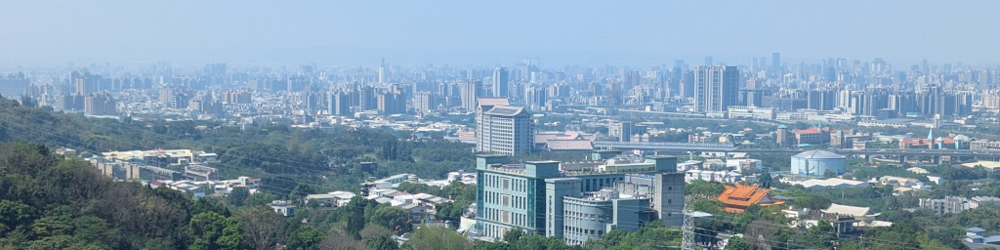

|

|
|
Our Taiwan Trip
April 6 - 17, 2026
|
This website is my personal diary of Mei-O's and my visit to Taiwan in 2026. It's something I want to read years from now and be able
to happily recall the events documented here. I wrote it for Mei-O and me, but I'm more than happy to share it with anyone who may come across it.
Just be aware that it is very detailed, with probably a lot more information - more pictures and more narrative - than a casual reader might care for.
If you don't want to read all the information below concerning this website (it's worth reading) and just want to go browse our day-to-day
activities, click here to begin with our travel to and arrival in Taiwan.
It's been nine years since we were last in Taiwan. In 2017, we traveled to Taiwan twice, first for spring break, then for Mei-O's mom's funeral,
both trips within a few months of each other. We've been wanting to return again, thinking about it many times over the intervening years, but just
never got around to arranging a trip. As I began having some physical limitations, specifically weak legs which interfered with my ability to walk long
distances, something somewhat important when visiting Taiwan, my hopes for ever returning again faded.
Then in January of 2026, Mei-O's nephew 志緯 (Zhiwei), her older brother 銘期's (Mingqi) son, notified me via a Facebook DM that his mom had
died, and along with her, his younger brother 志承 (Zhicheng). In his words, "...my mom left us on January 9 due to COPD (Chronic Obstructive Pulmonary
Disease) and heart failure, and my brother joined her on January 12 due to grief from her passing." While we knew his mom had heart problems, we were
shocked that Zhicheng had passed too. Zhiwei helped us set up WhatsApp so we could talk to him and Mingqi, and after the call ended, Mei-O decided she
really wanted to go back, especially to see Mingqi, but also to visit her homeland and see some of her remaining relatives still there, especially her
younger sister 美惠 (Meihui) and a bunch of her nieces: Meihui's two daughters, and her late brother 銘順's (Mingshun) two daughters. So we planned this
trip figuring I'll do the best that I can, and so here we are now.
During our visit, we stayed at the Zhongke Hotel (中科大飯天). It's just a block away from Meihui's house, and, since when we're
in Taiwan, we spend a lot of time with her, that's where we usually stay. Living near Meihui was very convenient, since we often met up with her to go
places together and eat together. Meihui knows the manager there, so she made reservations for us (and got us a
great deal on our room, $633.20 for 10 nights!), and also arranged a for car to pick us up at the airport in Taipei upon our arrival on the evening
of the 7th and drive us down to the hotel in Taichung.
Being low season, I was able to find some cheap airline tickets with good departure and arrival
times. Our outbound flight from Minneapolis on April 6th was to leave mid-morning, and after
a 3½ hour layover in Seattle, we were scheduled to arrive in Taipei around 8 PM on the 7th after about 20 hours en route (almost 13
hours from Seattle to Taipei). Unfortunately, our flight from Seattle was delayed several hours, getting us to Taipei around 10:30 PM. On our
return flight, we were scheduled to leave Taipei (after an early morning 1½ hour drive from
Taichung) around 9:30 AM on the 17th, stop in Seattle for 2½ hours, then get into Minneapolis around 2 PM after about 16 hours en
route from Taipei (10½ hours from Taipei to Seattle), but we were once again delayed, leaving Seattle 3½ hours late, not getting into MSP
until around 5:30. From there it was an easy ride home. Both going over and coming back, our experiences at all the airports - checking in, getting our
boarding passes, going through security, immigration and customs, retrieving our checked luggage, and making all our flights on time - all went amazingly
smooth without incident. The delayed departures were an issue, an inconvenience we could live with.
The first few days of the trip, as you will see on the first several pages of this website, were filled with a lot of down time due to our jet lag,
with a lot of mid-morning and afternoon naps, or time spent just laying around doing nothing, feeling very tired. Since we did have to eat, a lot of
the pictures from those days are from our eating experiences. Farther on in our trip, some more interesting events are documented.
One final comment. Most, maybe 95% of the pictures on the following pages were taken with my Google Pixel 7 phone's camera. Some pictures were
taken by Mei-O, a few by Zhiwei, and only one or two by Meihui.
Here are a few notes about this website:
- Over the years, I've used several different formats for the websites I've created for our various trips, hopefully improving the viewablity and ease
of navigation over the previous trips' websites. This year has been done in a totally new format based on my "Lydia and Max" website. It's simple and
straightforward; I hope it's satisfactory.
- As I said at the top of this page, "This website is my personal diary...I wrote it for Mei-O and me." I used a lot of Chinese on the site,
and only some of it is translated into English. It's basically used in place names, street names, names of restaurants, food names, etc., and
not being able to read it shouldn't hinder your enjoyment of the site (I hope). I depended a lot on an Image to Text Converter app I found at
https://www.imagetotext.info/ which helped me convert Chinese writing on a lot of signs, menu items, plaques, etc. to Chinese text, which I then,
using Google Translate, was able to render into English. I didn't proofread all of the very long Chinese extractions and translations, so there
may be some errors in them, a character here, a word there, but probably not enough to distort the meaning.
- Everything is ordered chronologically day by day. Some days may take up more than one page.
- That being said, the first page covers our first two days, April 6th and 7th, since they were mostly travel, losing a day as we
traveled westward to Taiwan.
- Clicking on any picture (other than the page headers at the top of each page) will display it full size.
- Links to videos always have a video length associated with them, e.g., ...video link (0:37)..., indicating the video is 37
seconds long. Videos will always open in a new window. Be sure to close it when the video is done.
- Most of the pictures here were taken with my Google Pixel 7 phone. Others were taken by Mei-O using her Samsung Galaxy A23 phone.
- Special pages - We had a few adventures during our stay, some grand, some small, which I've documented on some special
pages. You'll find the links to them within the narrative of the trip. On some of them, you'll be able to click on each picture to see it enlarged for
a better view. Here's a list of all the special pages
in case you want to come back to them later.
- Videos - Here are some videos I took during our adventures. There are links to them in the narrative under their
related picture, but here's a list of all the videos in
case you want to view any of them again.
- Page headers - Here are all the page headers I've used on this website.
- Miscellaneous pictures - And, finally, there are 8 pages of miscellaneous
pictures that didn't fit in the chronological narrative of the trip or that I just wanted to draw attention to separately from the narrative
which they are associated with.
So, click on the below image to start to view the pictures of our trip, along with a lot of commentary on all the things we saw and did. Enjoy!
|
|
{kind=link}
{kind=link}
{kind=link}
{kind=link}
{kind=link}